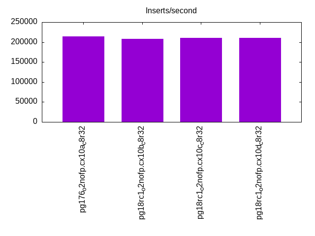
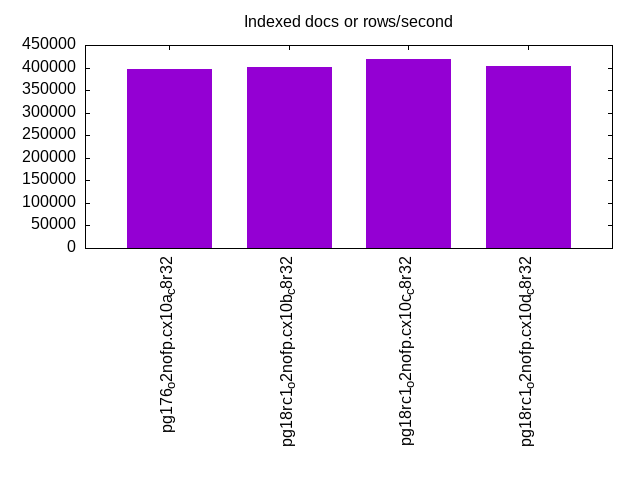
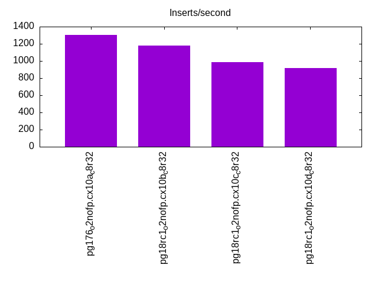
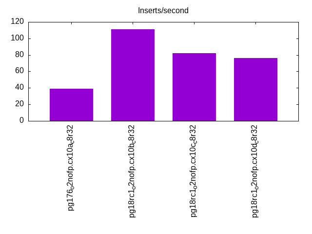
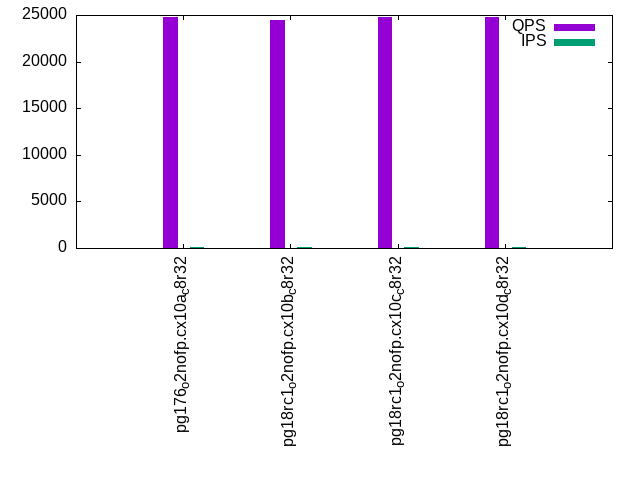
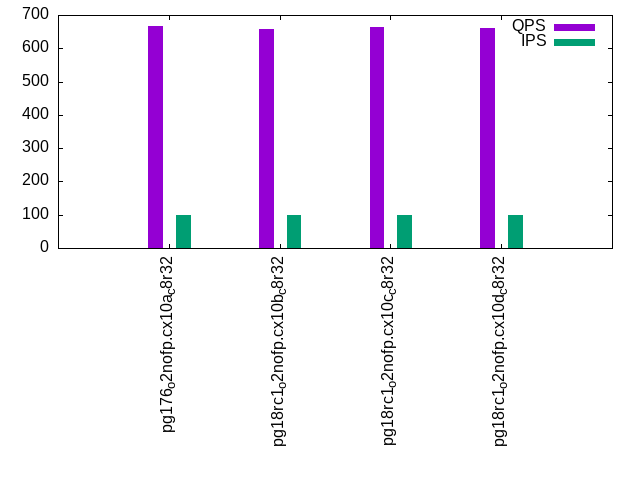
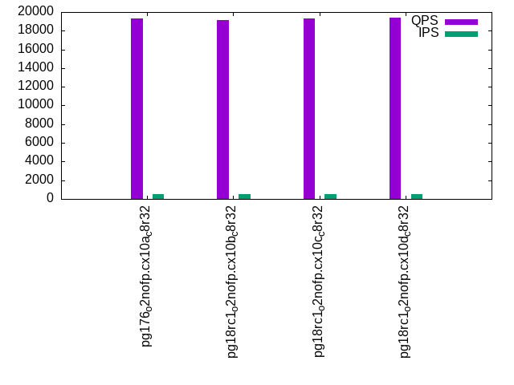
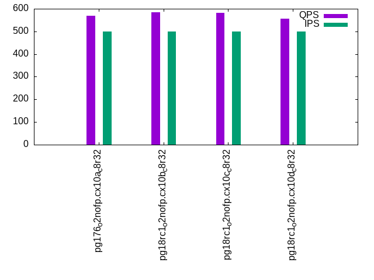
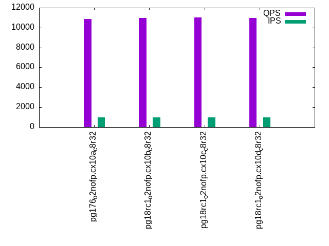
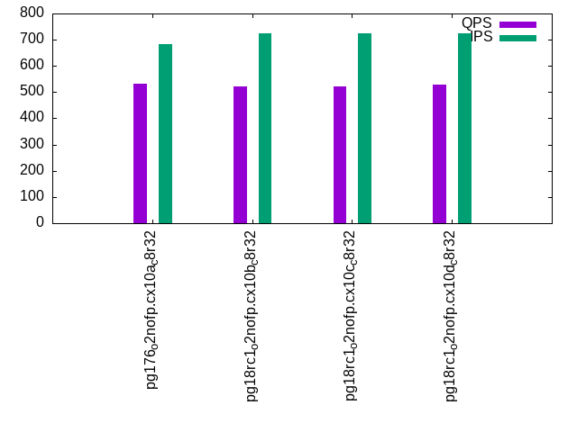

This is a report for the insert benchmark with 800M docs and 1 client(s). It is generated by scripts (bash, awk, sed) and Tufte might not be impressed. An overview of the insert benchmark is here and a short update is here. Below, by DBMS, I mean DBMS+version.config. An example is my8020.c10b40 where my means MySQL, 8020 is version 8.0.20 and c10b40 is the name for the configuration file.
The test server has 8 AMD cores, 32G RAM and an NVMe device for the database. The benchmark was run with 1 client and there were 1 or 3 connections per client (1 for queries or inserts without rate limits, 1+1 for rate limited inserts+deletes). It uses 1 table with a table per client. It loads 800M rows per table without secondary indexes, creates 3 secondary indexes per table, then inserts 16m+4m rows per table with a delete per insert to avoid growing the table. It then does 6 read+write tests for 7200s each that do queries as fast as possible with 100,100,500,500,1000,1000 inserts/s and the same for deletes/s per client concurrent with the queries. The database is larger than memory and the working set it not cached for most benchmark steps. Clients and the DBMS share one server.
The tested DBMS are:
The numbers are inserts/s for l.i0, l.i1 and l.i2, indexed docs (or rows) /s for l.x and queries/s for qr100, qp100 thru qr1000, qp1000" The values are the average rate over the entire test for inserts (IPS) and queries (QPS). The range of values for IPS and QPS is split into 3 parts: bottom 25%, middle 50%, top 25%. Values in the bottom 25% have a red background, values in the top 25% have a green background and values in the middle have no color. A gray background is used for values that can be ignored because the DBMS did not sustain the target insert rate. Red backgrounds are not used when the minimum value is within 80% of the max value.
| dbms | l.i0 | l.x | l.i1 | l.i2 | qr100 | qp100 | qr500 | qp500 | qr1000 | qp1000 |
|---|---|---|---|---|---|---|---|---|---|---|
| pg176_o2nofp.cx10a_c8r32 | 214420 | 397417 | 1301 | 39 | 24810 | 666 | 19280 | 569 | 10884 | 533 |
| pg18rc1_o2nofp.cx10b_c8r32 | 207846 | 401405 | 1177 | 111 | 24495 | 657 | 19129 | 584 | 10979 | 522 |
| pg18rc1_o2nofp.cx10c_c8r32 | 210139 | 419948 | 987 | 82 | 24736 | 664 | 19328 | 582 | 11026 | 522 |
| pg18rc1_o2nofp.cx10d_c8r32 | 210250 | 404449 | 917 | 76 | 24761 | 662 | 19393 | 557 | 10960 | 528 |
This table has relative throughput, throughput for the DBMS relative to the DBMS in the first line, using the absolute throughput from the previous table. Values less than 0.95 have a yellow background. Values greater than 1.05 have a blue background.
| dbms | l.i0 | l.x | l.i1 | l.i2 | qr100 | qp100 | qr500 | qp500 | qr1000 | qp1000 |
|---|---|---|---|---|---|---|---|---|---|---|
| pg176_o2nofp.cx10a_c8r32 | 1.00 | 1.00 | 1.00 | 1.00 | 1.00 | 1.00 | 1.00 | 1.00 | 1.00 | 1.00 |
| pg18rc1_o2nofp.cx10b_c8r32 | 0.97 | 1.01 | 0.90 | 2.85 | 0.99 | 0.99 | 0.99 | 1.03 | 1.01 | 0.98 |
| pg18rc1_o2nofp.cx10c_c8r32 | 0.98 | 1.06 | 0.76 | 2.10 | 1.00 | 1.00 | 1.00 | 1.02 | 1.01 | 0.98 |
| pg18rc1_o2nofp.cx10d_c8r32 | 0.98 | 1.02 | 0.70 | 1.95 | 1.00 | 0.99 | 1.01 | 0.98 | 1.01 | 0.99 |
This lists the average rate of inserts/s for the tests that do inserts concurrent with queries. For such tests the query rate is listed in the table above. The read+write tests are setup so that the insert rate should match the target rate every second. Cells that are not at least 95% of the target have a red background to indicate a failure to satisfy the target.
| dbms | qr100.L1 | qp100.L2 | qr500.L3 | qp500.L4 | qr1000.L5 | qp1000.L6 |
|---|---|---|---|---|---|---|
| pg176_o2nofp.cx10a_c8r32 | 100 | 100 | 500 | 500 | 972 | 684 |
| pg18rc1_o2nofp.cx10b_c8r32 | 100 | 100 | 500 | 500 | 986 | 724 |
| pg18rc1_o2nofp.cx10c_c8r32 | 100 | 100 | 500 | 500 | 988 | 723 |
| pg18rc1_o2nofp.cx10d_c8r32 | 100 | 100 | 500 | 500 | 987 | 723 |
| target | 100 | 100 | 500 | 500 | 1000 | 1000 |
l.i0: load without secondary indexes. Graphs for performance per 1-second interval are here.
Average throughput:
Insert response time histogram: each cell has the percentage of responses that take <= the time in the header and max is the max response time in seconds. For the max column values in the top 25% of the range have a red background and in the bottom 25% of the range have a green background. The red background is not used when the min value is within 80% of the max value.
| dbms | 256us | 1ms | 4ms | 16ms | 64ms | 256ms | 1s | 4s | 16s | gt | max |
|---|---|---|---|---|---|---|---|---|---|---|---|
| pg176_o2nofp.cx10a_c8r32 | 99.983 | 0.014 | 0.002 | 0.001 | 0.040 | ||||||
| pg18rc1_o2nofp.cx10b_c8r32 | 99.983 | 0.014 | 0.003 | nonzero | 0.040 | ||||||
| pg18rc1_o2nofp.cx10c_c8r32 | 99.982 | 0.015 | 0.003 | nonzero | 0.042 | ||||||
| pg18rc1_o2nofp.cx10d_c8r32 | 99.984 | 0.013 | 0.003 | nonzero | 0.044 |
Performance metrics for the DBMS listed above. Some are normalized by throughput, others are not. Legend for results is here.
ips qps rps rmbps wps wmbps rpq rkbpq wpi wkbpi csps cpups cspq cpupq dbgb1 dbgb2 rss maxop p50 p99 tag 214420 0 37 0.3 798.4 88.3 0.000 0.001 0.004 0.422 21352 20.6 0.100 8 76.5 116.6 1.2 0.040 215749 207866 pg176_o2nofp.cx10a_c8r32 207846 0 35 0.3 778.9 85.5 0.000 0.001 0.004 0.421 20698 20.3 0.100 8 76.5 116.6 1.0 0.040 209168 201266 pg18rc1_o2nofp.cx10b_c8r32 210139 0 36 0.3 786.7 86.3 0.000 0.001 0.004 0.421 21008 20.5 0.100 8 76.5 116.6 18.9 0.042 211365 203763 pg18rc1_o2nofp.cx10c_c8r32 210250 0 36 0.3 785.2 86.4 0.000 0.001 0.004 0.421 21058 20.4 0.100 8 76.5 116.6 18.9 0.044 211576 203268 pg18rc1_o2nofp.cx10d_c8r32
l.x: create secondary indexes.
Average throughput:
Performance metrics for the DBMS listed above. Some are normalized by throughput, others are not. Legend for results is here.
ips qps rps rmbps wps wmbps rpq rkbpq wpi wkbpi csps cpups cspq cpupq dbgb1 dbgb2 rss maxop p50 p99 tag 397417 0 1336 146.0 1220.9 148.5 0.003 0.376 0.003 0.383 1164 12.5 0.003 3 153.6 193.7 23.4 0.002 NA NA pg176_o2nofp.cx10a_c8r32 401405 0 1285 144.3 1224.4 149.9 0.003 0.368 0.003 0.382 1082 12.5 0.003 2 153.6 193.7 23.4 0.003 NA NA pg18rc1_o2nofp.cx10b_c8r32 419948 0 1210 144.3 1280.0 156.6 0.003 0.352 0.003 0.382 2031 13.2 0.005 3 153.6 193.7 23.4 0.003 NA NA pg18rc1_o2nofp.cx10c_c8r32 404449 0 1211 141.4 1236.1 151.1 0.003 0.358 0.003 0.383 1715 13.0 0.004 3 153.6 193.7 23.4 0.003 NA NA pg18rc1_o2nofp.cx10d_c8r32
l.i1: continue load after secondary indexes created with 50 inserts per transaction. Graphs for performance per 1-second interval are here.
Average throughput:
Insert response time histogram: each cell has the percentage of responses that take <= the time in the header and max is the max response time in seconds. For the max column values in the top 25% of the range have a red background and in the bottom 25% of the range have a green background. The red background is not used when the min value is within 80% of the max value.
| dbms | 256us | 1ms | 4ms | 16ms | 64ms | 256ms | 1s | 4s | 16s | gt | max |
|---|---|---|---|---|---|---|---|---|---|---|---|
| pg176_o2nofp.cx10a_c8r32 | 98.716 | 1.113 | 0.170 | 0.001 | 0.381 | ||||||
| pg18rc1_o2nofp.cx10b_c8r32 | nonzero | 98.771 | 1.076 | 0.152 | 0.193 | ||||||
| pg18rc1_o2nofp.cx10c_c8r32 | 98.922 | 0.917 | 0.161 | 0.182 | |||||||
| pg18rc1_o2nofp.cx10d_c8r32 | 97.037 | 2.504 | 0.458 | 0.001 | 0.332 |
Delete response time histogram: each cell has the percentage of responses that take <= the time in the header and max is the max response time in seconds. For the max column values in the top 25% of the range have a red background and in the bottom 25% of the range have a green background. The red background is not used when the min value is within 80% of the max value.
| dbms | 256us | 1ms | 4ms | 16ms | 64ms | 256ms | 1s | 4s | 16s | gt | max |
|---|---|---|---|---|---|---|---|---|---|---|---|
| pg176_o2nofp.cx10a_c8r32 | 0.188 | 4.271 | 10.465 | 77.810 | 7.266 | 0.126 | |||||
| pg18rc1_o2nofp.cx10b_c8r32 | 0.206 | 4.336 | 11.250 | 67.585 | 16.623 | 0.090 | |||||
| pg18rc1_o2nofp.cx10c_c8r32 | 0.264 | 4.240 | 11.071 | 47.420 | 37.005 | 0.114 | |||||
| pg18rc1_o2nofp.cx10d_c8r32 | 0.294 | 4.315 | 11.053 | 44.321 | 40.017 | 0.118 |
Performance metrics for the DBMS listed above. Some are normalized by throughput, others are not. Legend for results is here.
ips qps rps rmbps wps wmbps rpq rkbpq wpi wkbpi csps cpups cspq cpupq dbgb1 dbgb2 rss maxop p50 p99 tag 1301 0 1530 12.3 2008.0 31.1 1.176 9.682 1.544 24.460 3632 13.6 2.793 837 156.2 196.3 22.6 0.381 1150 400 pg176_o2nofp.cx10a_c8r32 1177 0 1382 10.9 1794.7 27.6 1.173 9.486 1.524 23.977 3296 13.5 2.799 917 156.2 196.3 23.4 0.193 950 600 pg18rc1_o2nofp.cx10b_c8r32 987 0 1158 9.1 1517.8 23.6 1.173 9.486 1.538 24.511 2791 13.5 2.829 1095 156.2 194.5 23.3 0.182 650 450 pg18rc1_o2nofp.cx10c_c8r32 917 0 1076 8.5 1412.5 22.0 1.173 9.486 1.540 24.603 2603 13.2 2.839 1152 156.2 193.0 21.7 0.332 650 450 pg18rc1_o2nofp.cx10d_c8r32
l.i2: continue load after secondary indexes created with 5 inserts per transaction. Graphs for performance per 1-second interval are here.
Average throughput:
Insert response time histogram: each cell has the percentage of responses that take <= the time in the header and max is the max response time in seconds. For the max column values in the top 25% of the range have a red background and in the bottom 25% of the range have a green background. The red background is not used when the min value is within 80% of the max value.
| dbms | 256us | 1ms | 4ms | 16ms | 64ms | 256ms | 1s | 4s | 16s | gt | max |
|---|---|---|---|---|---|---|---|---|---|---|---|
| pg176_o2nofp.cx10a_c8r32 | 2.488 | 97.272 | 0.238 | 0.002 | nonzero | 0.088 | |||||
| pg18rc1_o2nofp.cx10b_c8r32 | 0.008 | 19.993 | 76.153 | 3.188 | 0.653 | 0.002 | 0.003 | nonzero | 2.075 | ||
| pg18rc1_o2nofp.cx10c_c8r32 | 6.974 | 92.887 | 0.139 | 0.001 | 0.018 | ||||||
| pg18rc1_o2nofp.cx10d_c8r32 | 6.377 | 93.599 | 0.024 | nonzero | 0.022 |
Delete response time histogram: each cell has the percentage of responses that take <= the time in the header and max is the max response time in seconds. For the max column values in the top 25% of the range have a red background and in the bottom 25% of the range have a green background. The red background is not used when the min value is within 80% of the max value.
| dbms | 256us | 1ms | 4ms | 16ms | 64ms | 256ms | 1s | 4s | 16s | gt | max |
|---|---|---|---|---|---|---|---|---|---|---|---|
| pg176_o2nofp.cx10a_c8r32 | 100.000 | nonzero | 0.256 | ||||||||
| pg18rc1_o2nofp.cx10b_c8r32 | 0.534 | 8.482 | 15.430 | 0.032 | 75.101 | 0.420 | 0.002 | nonzero | 2.075 | ||
| pg18rc1_o2nofp.cx10c_c8r32 | 75.748 | 24.252 | 0.204 | ||||||||
| pg18rc1_o2nofp.cx10d_c8r32 | 66.990 | 33.010 | nonzero | 0.257 |
Performance metrics for the DBMS listed above. Some are normalized by throughput, others are not. Legend for results is here.
ips qps rps rmbps wps wmbps rpq rkbpq wpi wkbpi csps cpups cspq cpupq dbgb1 dbgb2 rss maxop p50 p99 tag 39 0 43 0.3 97.2 1.3 1.095 8.886 2.493 33.906 354 12.4 9.082 25436 156.9 176.9 23.4 0.088 40 35 pg176_o2nofp.cx10a_c8r32 111 0 178 3.2 335.0 6.6 1.597 29.900 3.013 60.836 815 12.5 7.326 8993 156.8 196.9 23.4 2.075 85 75 pg18rc1_o2nofp.cx10b_c8r32 82 0 90 0.7 185.6 2.7 1.092 8.839 2.250 33.044 603 12.4 7.313 12024 156.9 176.9 23.4 0.018 80 75 pg18rc1_o2nofp.cx10c_c8r32 76 0 82 0.7 171.9 2.4 1.091 8.829 2.274 33.172 563 12.4 7.453 13122 156.9 176.9 23.4 0.022 80 45 pg18rc1_o2nofp.cx10d_c8r32
qr100.L1: range queries with 100 insert/s per client. Graphs for performance per 1-second interval are here.
Average throughput:
Query response time histogram: each cell has the percentage of responses that take <= the time in the header and max is the max response time in seconds. For max values in the top 25% of the range have a red background and in the bottom 25% of the range have a green background. The red background is not used when the min value is within 80% of the max value.
| dbms | 256us | 1ms | 4ms | 16ms | 64ms | 256ms | 1s | 4s | 16s | gt | max |
|---|---|---|---|---|---|---|---|---|---|---|---|
| pg176_o2nofp.cx10a_c8r32 | 99.991 | 0.009 | nonzero | nonzero | 0.024 | ||||||
| pg18rc1_o2nofp.cx10b_c8r32 | 99.991 | 0.009 | nonzero | nonzero | 0.046 | ||||||
| pg18rc1_o2nofp.cx10c_c8r32 | 99.991 | 0.009 | nonzero | nonzero | nonzero | 0.053 | |||||
| pg18rc1_o2nofp.cx10d_c8r32 | 99.991 | 0.009 | nonzero | nonzero | nonzero | 0.025 |
Insert response time histogram: each cell has the percentage of responses that take <= the time in the header and max is the max response time in seconds. For max values in the top 25% of the range have a red background and in the bottom 25% of the range have a green background. The red background is not used when the min value is within 80% of the max value.
| dbms | 256us | 1ms | 4ms | 16ms | 64ms | 256ms | 1s | 4s | 16s | gt | max |
|---|---|---|---|---|---|---|---|---|---|---|---|
| pg176_o2nofp.cx10a_c8r32 | 99.875 | 0.125 | 0.039 | ||||||||
| pg18rc1_o2nofp.cx10b_c8r32 | 99.868 | 0.125 | 0.007 | 0.071 | |||||||
| pg18rc1_o2nofp.cx10c_c8r32 | 99.896 | 0.097 | 0.007 | 0.068 | |||||||
| pg18rc1_o2nofp.cx10d_c8r32 | 99.903 | 0.097 | 0.057 |
Delete response time histogram: each cell has the percentage of responses that take <= the time in the header and max is the max response time in seconds. For max values in the top 25% of the range have a red background and in the bottom 25% of the range have a green background. The red background is not used when the min value is within 80% of the max value.
| dbms | 256us | 1ms | 4ms | 16ms | 64ms | 256ms | 1s | 4s | 16s | gt | max |
|---|---|---|---|---|---|---|---|---|---|---|---|
| pg176_o2nofp.cx10a_c8r32 | 0.007 | 15.792 | 69.632 | 14.569 | 0.006 | ||||||
| pg18rc1_o2nofp.cx10b_c8r32 | 15.757 | 70.479 | 13.764 | 0.006 | |||||||
| pg18rc1_o2nofp.cx10c_c8r32 | 15.701 | 69.757 | 14.542 | 0.007 | |||||||
| pg18rc1_o2nofp.cx10d_c8r32 | 16.090 | 71.271 | 12.639 | 0.006 |
Performance metrics for the DBMS listed above. Some are normalized by throughput, others are not. Legend for results is here.
ips qps rps rmbps wps wmbps rpq rkbpq wpi wkbpi csps cpups cspq cpupq dbgb1 dbgb2 rss maxop p50 p99 tag 100 24810 115 0.9 155.3 2.6 0.005 0.038 1.554 26.952 95089 8.6 3.833 28 156.9 189.7 23.4 0.024 24843 23788 pg176_o2nofp.cx10a_c8r32 100 24495 110 0.9 156.8 2.6 0.005 0.038 1.570 26.986 93878 8.6 3.833 28 156.8 190.3 23.4 0.046 24476 23708 pg18rc1_o2nofp.cx10b_c8r32 100 24736 111 0.9 155.6 2.6 0.004 0.037 1.558 26.998 94799 8.8 3.832 28 157.0 189.8 23.4 0.053 24720 23700 pg18rc1_o2nofp.cx10c_c8r32 100 24761 110 0.9 156.3 2.6 0.004 0.036 1.564 27.033 94894 8.6 3.832 28 157.0 190.1 23.4 0.025 24794 23868 pg18rc1_o2nofp.cx10d_c8r32
qp100.L2: point queries with 100 insert/s per client. Graphs for performance per 1-second interval are here.
Average throughput:
Query response time histogram: each cell has the percentage of responses that take <= the time in the header and max is the max response time in seconds. For max values in the top 25% of the range have a red background and in the bottom 25% of the range have a green background. The red background is not used when the min value is within 80% of the max value.
| dbms | 256us | 1ms | 4ms | 16ms | 64ms | 256ms | 1s | 4s | 16s | gt | max |
|---|---|---|---|---|---|---|---|---|---|---|---|
| pg176_o2nofp.cx10a_c8r32 | nonzero | 3.587 | 96.390 | 0.023 | nonzero | 0.040 | |||||
| pg18rc1_o2nofp.cx10b_c8r32 | nonzero | 3.081 | 96.894 | 0.024 | nonzero | 0.034 | |||||
| pg18rc1_o2nofp.cx10c_c8r32 | 3.499 | 96.475 | 0.026 | nonzero | 0.049 | ||||||
| pg18rc1_o2nofp.cx10d_c8r32 | 3.424 | 96.544 | 0.030 | 0.002 | 0.043 |
Insert response time histogram: each cell has the percentage of responses that take <= the time in the header and max is the max response time in seconds. For max values in the top 25% of the range have a red background and in the bottom 25% of the range have a green background. The red background is not used when the min value is within 80% of the max value.
| dbms | 256us | 1ms | 4ms | 16ms | 64ms | 256ms | 1s | 4s | 16s | gt | max |
|---|---|---|---|---|---|---|---|---|---|---|---|
| pg176_o2nofp.cx10a_c8r32 | 99.889 | 0.111 | 0.048 | ||||||||
| pg18rc1_o2nofp.cx10b_c8r32 | 99.861 | 0.139 | 0.042 | ||||||||
| pg18rc1_o2nofp.cx10c_c8r32 | 99.840 | 0.160 | 0.034 | ||||||||
| pg18rc1_o2nofp.cx10d_c8r32 | 99.840 | 0.132 | 0.028 | 0.077 |
Delete response time histogram: each cell has the percentage of responses that take <= the time in the header and max is the max response time in seconds. For max values in the top 25% of the range have a red background and in the bottom 25% of the range have a green background. The red background is not used when the min value is within 80% of the max value.
| dbms | 256us | 1ms | 4ms | 16ms | 64ms | 256ms | 1s | 4s | 16s | gt | max |
|---|---|---|---|---|---|---|---|---|---|---|---|
| pg176_o2nofp.cx10a_c8r32 | 10.667 | 89.326 | 0.007 | 0.021 | |||||||
| pg18rc1_o2nofp.cx10b_c8r32 | 11.021 | 88.972 | 0.007 | 0.021 | |||||||
| pg18rc1_o2nofp.cx10c_c8r32 | 11.062 | 88.931 | 0.007 | 0.022 | |||||||
| pg18rc1_o2nofp.cx10d_c8r32 | 10.903 | 89.090 | 0.007 | 0.021 |
Performance metrics for the DBMS listed above. Some are normalized by throughput, others are not. Legend for results is here.
ips qps rps rmbps wps wmbps rpq rkbpq wpi wkbpi csps cpups cspq cpupq dbgb1 dbgb2 rss maxop p50 p99 tag 100 666 8278 64.8 272.1 3.5 12.433 99.599 2.723 35.667 18533 2.8 27.836 336 157.0 179.6 23.4 0.040 672 464 pg176_o2nofp.cx10a_c8r32 100 657 8181 64.0 270.1 3.5 12.446 99.703 2.704 35.461 18320 3.1 27.871 377 156.8 180.0 23.3 0.034 656 448 pg18rc1_o2nofp.cx10b_c8r32 100 664 8249 64.5 272.0 3.5 12.414 99.402 2.723 35.661 18474 3.1 27.801 373 157.0 179.7 23.4 0.049 672 464 pg18rc1_o2nofp.cx10c_c8r32 100 662 8215 64.7 271.1 3.5 12.409 100.154 2.714 35.594 18386 3.0 27.774 363 157.0 179.9 23.4 0.043 672 464 pg18rc1_o2nofp.cx10d_c8r32
qr500.L3: range queries with 500 insert/s per client. Graphs for performance per 1-second interval are here.
Average throughput:
Query response time histogram: each cell has the percentage of responses that take <= the time in the header and max is the max response time in seconds. For max values in the top 25% of the range have a red background and in the bottom 25% of the range have a green background. The red background is not used when the min value is within 80% of the max value.
| dbms | 256us | 1ms | 4ms | 16ms | 64ms | 256ms | 1s | 4s | 16s | gt | max |
|---|---|---|---|---|---|---|---|---|---|---|---|
| pg176_o2nofp.cx10a_c8r32 | 99.971 | 0.029 | nonzero | nonzero | nonzero | nonzero | 0.074 | ||||
| pg18rc1_o2nofp.cx10b_c8r32 | 99.970 | 0.029 | nonzero | nonzero | nonzero | nonzero | 0.089 | ||||
| pg18rc1_o2nofp.cx10c_c8r32 | 99.976 | 0.023 | nonzero | nonzero | nonzero | nonzero | 0.083 | ||||
| pg18rc1_o2nofp.cx10d_c8r32 | 99.971 | 0.028 | nonzero | nonzero | nonzero | nonzero | 0.092 |
Insert response time histogram: each cell has the percentage of responses that take <= the time in the header and max is the max response time in seconds. For max values in the top 25% of the range have a red background and in the bottom 25% of the range have a green background. The red background is not used when the min value is within 80% of the max value.
| dbms | 256us | 1ms | 4ms | 16ms | 64ms | 256ms | 1s | 4s | 16s | gt | max |
|---|---|---|---|---|---|---|---|---|---|---|---|
| pg176_o2nofp.cx10a_c8r32 | 0.004 | 97.797 | 1.896 | 0.303 | 0.241 | ||||||
| pg18rc1_o2nofp.cx10b_c8r32 | 0.007 | 99.753 | 0.240 | 0.036 | |||||||
| pg18rc1_o2nofp.cx10c_c8r32 | 0.029 | 99.765 | 0.206 | 0.027 | |||||||
| pg18rc1_o2nofp.cx10d_c8r32 | 0.033 | 99.715 | 0.229 | 0.022 | 0.096 |
Delete response time histogram: each cell has the percentage of responses that take <= the time in the header and max is the max response time in seconds. For max values in the top 25% of the range have a red background and in the bottom 25% of the range have a green background. The red background is not used when the min value is within 80% of the max value.
| dbms | 256us | 1ms | 4ms | 16ms | 64ms | 256ms | 1s | 4s | 16s | gt | max |
|---|---|---|---|---|---|---|---|---|---|---|---|
| pg176_o2nofp.cx10a_c8r32 | 24.649 | 75.351 | 0.048 | ||||||||
| pg18rc1_o2nofp.cx10b_c8r32 | 28.836 | 71.164 | 0.040 | ||||||||
| pg18rc1_o2nofp.cx10c_c8r32 | 28.207 | 71.793 | 0.042 | ||||||||
| pg18rc1_o2nofp.cx10d_c8r32 | 28.354 | 71.646 | 0.040 |
Performance metrics for the DBMS listed above. Some are normalized by throughput, others are not. Legend for results is here.
ips qps rps rmbps wps wmbps rpq rkbpq wpi wkbpi csps cpups cspq cpupq dbgb1 dbgb2 rss maxop p50 p99 tag 500 19280 654 5.3 655.7 12.0 0.034 0.279 1.312 24.592 75390 12.9 3.910 54 157.3 179.1 23.4 0.074 19209 16318 pg176_o2nofp.cx10a_c8r32 500 19129 646 5.2 671.9 12.1 0.034 0.279 1.345 24.838 74561 12.6 3.898 53 156.8 178.6 23.3 0.089 19085 16302 pg18rc1_o2nofp.cx10b_c8r32 500 19328 652 5.2 659.5 12.0 0.034 0.278 1.320 24.640 75330 12.5 3.897 52 157.3 179.1 23.4 0.083 19214 16509 pg18rc1_o2nofp.cx10c_c8r32 500 19393 653 5.3 667.5 12.1 0.034 0.282 1.336 24.861 75578 12.5 3.897 52 157.3 179.1 23.4 0.092 19355 16366 pg18rc1_o2nofp.cx10d_c8r32
qp500.L4: point queries with 500 insert/s per client. Graphs for performance per 1-second interval are here.
Average throughput:
Query response time histogram: each cell has the percentage of responses that take <= the time in the header and max is the max response time in seconds. For max values in the top 25% of the range have a red background and in the bottom 25% of the range have a green background. The red background is not used when the min value is within 80% of the max value.
| dbms | 256us | 1ms | 4ms | 16ms | 64ms | 256ms | 1s | 4s | 16s | gt | max |
|---|---|---|---|---|---|---|---|---|---|---|---|
| pg176_o2nofp.cx10a_c8r32 | 1.303 | 97.798 | 0.850 | 0.048 | nonzero | nonzero | 0.266 | ||||
| pg18rc1_o2nofp.cx10b_c8r32 | 1.284 | 98.382 | 0.326 | 0.008 | 0.036 | ||||||
| pg18rc1_o2nofp.cx10c_c8r32 | 1.252 | 98.474 | 0.269 | 0.005 | nonzero | 0.068 | |||||
| pg18rc1_o2nofp.cx10d_c8r32 | nonzero | 1.334 | 97.240 | 1.329 | 0.096 | nonzero | 0.076 |
Insert response time histogram: each cell has the percentage of responses that take <= the time in the header and max is the max response time in seconds. For max values in the top 25% of the range have a red background and in the bottom 25% of the range have a green background. The red background is not used when the min value is within 80% of the max value.
| dbms | 256us | 1ms | 4ms | 16ms | 64ms | 256ms | 1s | 4s | 16s | gt | max |
|---|---|---|---|---|---|---|---|---|---|---|---|
| pg176_o2nofp.cx10a_c8r32 | 92.869 | 5.956 | 1.171 | 0.004 | 0.280 | ||||||
| pg18rc1_o2nofp.cx10b_c8r32 | 98.507 | 1.337 | 0.156 | 0.180 | |||||||
| pg18rc1_o2nofp.cx10c_c8r32 | 97.562 | 2.292 | 0.146 | 0.170 | |||||||
| pg18rc1_o2nofp.cx10d_c8r32 | 90.254 | 6.933 | 2.812 | 0.179 |
Delete response time histogram: each cell has the percentage of responses that take <= the time in the header and max is the max response time in seconds. For max values in the top 25% of the range have a red background and in the bottom 25% of the range have a green background. The red background is not used when the min value is within 80% of the max value.
| dbms | 256us | 1ms | 4ms | 16ms | 64ms | 256ms | 1s | 4s | 16s | gt | max |
|---|---|---|---|---|---|---|---|---|---|---|---|
| pg176_o2nofp.cx10a_c8r32 | 99.867 | 0.133 | 0.097 | ||||||||
| pg18rc1_o2nofp.cx10b_c8r32 | 99.996 | 0.004 | 0.098 | ||||||||
| pg18rc1_o2nofp.cx10c_c8r32 | 99.999 | 0.001 | 0.100 | ||||||||
| pg18rc1_o2nofp.cx10d_c8r32 | 99.999 | 0.001 | 0.098 |
Performance metrics for the DBMS listed above. Some are normalized by throughput, others are not. Legend for results is here.
ips qps rps rmbps wps wmbps rpq rkbpq wpi wkbpi csps cpups cspq cpupq dbgb1 dbgb2 rss maxop p50 p99 tag 500 569 8226 64.4 1247.5 16.1 14.453 115.822 2.496 33.037 18234 9.2 32.035 1293 157.7 180.2 19.8 0.266 592 112 pg176_o2nofp.cx10a_c8r32 500 584 8368 65.5 1228.1 15.9 14.335 114.982 2.457 32.655 18539 9.2 31.762 1261 156.8 179.3 23.3 0.036 592 400 pg18rc1_o2nofp.cx10b_c8r32 500 582 8338 65.3 1244.6 16.1 14.314 114.877 2.490 33.003 18626 8.8 31.976 1209 157.7 180.2 23.4 0.068 592 320 pg18rc1_o2nofp.cx10c_c8r32 500 557 8010 62.9 1231.2 16.0 14.372 115.596 2.463 32.776 17746 8.3 31.842 1191 157.7 180.1 23.4 0.076 592 96 pg18rc1_o2nofp.cx10d_c8r32
qr1000.L5: range queries with 1000 insert/s per client. Graphs for performance per 1-second interval are here.
Average throughput:
Query response time histogram: each cell has the percentage of responses that take <= the time in the header and max is the max response time in seconds. For max values in the top 25% of the range have a red background and in the bottom 25% of the range have a green background. The red background is not used when the min value is within 80% of the max value.
| dbms | 256us | 1ms | 4ms | 16ms | 64ms | 256ms | 1s | 4s | 16s | gt | max |
|---|---|---|---|---|---|---|---|---|---|---|---|
| pg176_o2nofp.cx10a_c8r32 | 99.711 | 0.287 | 0.002 | 0.001 | nonzero | nonzero | nonzero | 0.515 | |||
| pg18rc1_o2nofp.cx10b_c8r32 | 99.736 | 0.262 | 0.002 | 0.001 | nonzero | nonzero | nonzero | 0.389 | |||
| pg18rc1_o2nofp.cx10c_c8r32 | 99.769 | 0.228 | 0.002 | 0.001 | nonzero | nonzero | nonzero | 0.374 | |||
| pg18rc1_o2nofp.cx10d_c8r32 | 99.719 | 0.278 | 0.002 | 0.001 | nonzero | nonzero | nonzero | 0.497 |
Insert response time histogram: each cell has the percentage of responses that take <= the time in the header and max is the max response time in seconds. For max values in the top 25% of the range have a red background and in the bottom 25% of the range have a green background. The red background is not used when the min value is within 80% of the max value.
| dbms | 256us | 1ms | 4ms | 16ms | 64ms | 256ms | 1s | 4s | 16s | gt | max |
|---|---|---|---|---|---|---|---|---|---|---|---|
| pg176_o2nofp.cx10a_c8r32 | 98.941 | 1.047 | 0.012 | 0.101 | |||||||
| pg18rc1_o2nofp.cx10b_c8r32 | 0.007 | 98.883 | 0.919 | 0.191 | 0.187 | ||||||
| pg18rc1_o2nofp.cx10c_c8r32 | 0.013 | 98.974 | 0.831 | 0.181 | 0.158 | ||||||
| pg18rc1_o2nofp.cx10d_c8r32 | 98.935 | 1.056 | 0.010 | 0.094 |
Delete response time histogram: each cell has the percentage of responses that take <= the time in the header and max is the max response time in seconds. For max values in the top 25% of the range have a red background and in the bottom 25% of the range have a green background. The red background is not used when the min value is within 80% of the max value.
| dbms | 256us | 1ms | 4ms | 16ms | 64ms | 256ms | 1s | 4s | 16s | gt | max |
|---|---|---|---|---|---|---|---|---|---|---|---|
| pg176_o2nofp.cx10a_c8r32 | 99.997 | 0.003 | 0.121 | ||||||||
| pg18rc1_o2nofp.cx10b_c8r32 | 99.999 | 0.001 | 0.152 | ||||||||
| pg18rc1_o2nofp.cx10c_c8r32 | 99.999 | 0.001 | 0.129 | ||||||||
| pg18rc1_o2nofp.cx10d_c8r32 | 99.999 | 0.001 | 0.122 |
Performance metrics for the DBMS listed above. Some are normalized by throughput, others are not. Legend for results is here.
ips qps rps rmbps wps wmbps rpq rkbpq wpi wkbpi csps cpups cspq cpupq dbgb1 dbgb2 rss maxop p50 p99 tag 972 10884 1170 9.4 1442.8 25.2 0.107 0.882 1.485 26.607 44345 23.0 4.074 169 158.3 197.0 23.0 0.515 10764 8990 pg176_o2nofp.cx10a_c8r32 986 10979 1186 9.5 1462.4 25.3 0.108 0.889 1.483 26.284 44742 22.7 4.075 165 157.2 195.9 23.3 0.389 10910 9038 pg18rc1_o2nofp.cx10b_c8r32 988 11026 1196 9.6 1466.4 25.6 0.108 0.890 1.484 26.513 44939 22.6 4.076 164 158.3 197.0 23.2 0.374 10927 9102 pg18rc1_o2nofp.cx10c_c8r32 987 10960 1198 9.7 1467.3 25.5 0.109 0.903 1.486 26.461 44701 22.6 4.079 165 158.3 197.0 23.4 0.497 10878 9006 pg18rc1_o2nofp.cx10d_c8r32
qp1000.L6: point queries with 1000 insert/s per client. Graphs for performance per 1-second interval are here.
Average throughput:
Query response time histogram: each cell has the percentage of responses that take <= the time in the header and max is the max response time in seconds. For max values in the top 25% of the range have a red background and in the bottom 25% of the range have a green background. The red background is not used when the min value is within 80% of the max value.
| dbms | 256us | 1ms | 4ms | 16ms | 64ms | 256ms | 1s | 4s | 16s | gt | max |
|---|---|---|---|---|---|---|---|---|---|---|---|
| pg176_o2nofp.cx10a_c8r32 | 0.665 | 98.102 | 1.228 | 0.005 | nonzero | 0.079 | |||||
| pg18rc1_o2nofp.cx10b_c8r32 | 0.552 | 98.105 | 1.290 | 0.054 | nonzero | 0.072 | |||||
| pg18rc1_o2nofp.cx10c_c8r32 | 0.546 | 98.035 | 1.362 | 0.057 | 0.054 | ||||||
| pg18rc1_o2nofp.cx10d_c8r32 | 0.607 | 98.032 | 1.357 | 0.004 | 0.046 |
Insert response time histogram: each cell has the percentage of responses that take <= the time in the header and max is the max response time in seconds. For max values in the top 25% of the range have a red background and in the bottom 25% of the range have a green background. The red background is not used when the min value is within 80% of the max value.
| dbms | 256us | 1ms | 4ms | 16ms | 64ms | 256ms | 1s | 4s | 16s | gt | max |
|---|---|---|---|---|---|---|---|---|---|---|---|
| pg176_o2nofp.cx10a_c8r32 | 94.128 | 5.664 | 0.208 | 0.177 | |||||||
| pg18rc1_o2nofp.cx10b_c8r32 | 94.600 | 4.577 | 0.819 | 0.003 | 0.351 | ||||||
| pg18rc1_o2nofp.cx10c_c8r32 | 93.392 | 5.620 | 0.988 | 0.182 | |||||||
| pg18rc1_o2nofp.cx10d_c8r32 | 92.869 | 6.962 | 0.169 | 0.171 |
Delete response time histogram: each cell has the percentage of responses that take <= the time in the header and max is the max response time in seconds. For max values in the top 25% of the range have a red background and in the bottom 25% of the range have a green background. The red background is not used when the min value is within 80% of the max value.
| dbms | 256us | 1ms | 4ms | 16ms | 64ms | 256ms | 1s | 4s | 16s | gt | max |
|---|---|---|---|---|---|---|---|---|---|---|---|
| pg176_o2nofp.cx10a_c8r32 | 17.117 | 82.883 | 0.205 | ||||||||
| pg18rc1_o2nofp.cx10b_c8r32 | 27.810 | 72.190 | 0.207 | ||||||||
| pg18rc1_o2nofp.cx10c_c8r32 | 31.995 | 68.005 | 0.214 | ||||||||
| pg18rc1_o2nofp.cx10d_c8r32 | 31.677 | 68.323 | 0.202 |
Performance metrics for the DBMS listed above. Some are normalized by throughput, others are not. Legend for results is here.
ips qps rps rmbps wps wmbps rpq rkbpq wpi wkbpi csps cpups cspq cpupq dbgb1 dbgb2 rss maxop p50 p99 tag 684 533 8251 64.6 1643.0 21.4 15.475 124.022 2.402 31.990 18258 15.7 34.242 2356 159.2 197.8 23.0 0.079 544 352 pg176_o2nofp.cx10a_c8r32 724 522 8175 64.0 1726.4 22.3 15.667 125.597 2.386 31.615 18095 15.9 34.678 2438 158.1 196.7 23.3 0.072 528 112 pg18rc1_o2nofp.cx10b_c8r32 723 522 8201 64.2 1721.6 22.4 15.726 126.048 2.382 31.684 18151 15.9 34.806 2439 159.2 197.8 23.2 0.054 528 112 pg18rc1_o2nofp.cx10c_c8r32 723 528 8207 64.4 1724.0 22.3 15.541 124.943 2.385 31.657 18171 16.1 34.408 2439 159.2 197.8 23.4 0.046 528 352 pg18rc1_o2nofp.cx10d_c8r32
l.i0: load without secondary indexes
Performance metrics for all DBMS, not just the ones listed above. Some are normalized by throughput, others are not. Legend for results is here.
ips qps rps rmbps wps wmbps rpq rkbpq wpi wkbpi csps cpups cspq cpupq dbgb1 dbgb2 rss maxop p50 p99 tag 214420 0 37 0.3 798.4 88.3 0.000 0.001 0.004 0.422 21352 20.6 0.100 8 76.5 116.6 1.2 0.040 215749 207866 pg176_o2nofp.cx10a_c8r32 207846 0 35 0.3 778.9 85.5 0.000 0.001 0.004 0.421 20698 20.3 0.100 8 76.5 116.6 1.0 0.040 209168 201266 pg18rc1_o2nofp.cx10b_c8r32 210139 0 36 0.3 786.7 86.3 0.000 0.001 0.004 0.421 21008 20.5 0.100 8 76.5 116.6 18.9 0.042 211365 203763 pg18rc1_o2nofp.cx10c_c8r32 210250 0 36 0.3 785.2 86.4 0.000 0.001 0.004 0.421 21058 20.4 0.100 8 76.5 116.6 18.9 0.044 211576 203268 pg18rc1_o2nofp.cx10d_c8r32
l.x: create secondary indexes
Performance metrics for all DBMS, not just the ones listed above. Some are normalized by throughput, others are not. Legend for results is here.
ips qps rps rmbps wps wmbps rpq rkbpq wpi wkbpi csps cpups cspq cpupq dbgb1 dbgb2 rss maxop p50 p99 tag 397417 0 1336 146.0 1220.9 148.5 0.003 0.376 0.003 0.383 1164 12.5 0.003 3 153.6 193.7 23.4 0.002 NA NA pg176_o2nofp.cx10a_c8r32 401405 0 1285 144.3 1224.4 149.9 0.003 0.368 0.003 0.382 1082 12.5 0.003 2 153.6 193.7 23.4 0.003 NA NA pg18rc1_o2nofp.cx10b_c8r32 419948 0 1210 144.3 1280.0 156.6 0.003 0.352 0.003 0.382 2031 13.2 0.005 3 153.6 193.7 23.4 0.003 NA NA pg18rc1_o2nofp.cx10c_c8r32 404449 0 1211 141.4 1236.1 151.1 0.003 0.358 0.003 0.383 1715 13.0 0.004 3 153.6 193.7 23.4 0.003 NA NA pg18rc1_o2nofp.cx10d_c8r32
l.i1: continue load after secondary indexes created with 50 inserts per transaction
Performance metrics for all DBMS, not just the ones listed above. Some are normalized by throughput, others are not. Legend for results is here.
ips qps rps rmbps wps wmbps rpq rkbpq wpi wkbpi csps cpups cspq cpupq dbgb1 dbgb2 rss maxop p50 p99 tag 1301 0 1530 12.3 2008.0 31.1 1.176 9.682 1.544 24.460 3632 13.6 2.793 837 156.2 196.3 22.6 0.381 1150 400 pg176_o2nofp.cx10a_c8r32 1177 0 1382 10.9 1794.7 27.6 1.173 9.486 1.524 23.977 3296 13.5 2.799 917 156.2 196.3 23.4 0.193 950 600 pg18rc1_o2nofp.cx10b_c8r32 987 0 1158 9.1 1517.8 23.6 1.173 9.486 1.538 24.511 2791 13.5 2.829 1095 156.2 194.5 23.3 0.182 650 450 pg18rc1_o2nofp.cx10c_c8r32 917 0 1076 8.5 1412.5 22.0 1.173 9.486 1.540 24.603 2603 13.2 2.839 1152 156.2 193.0 21.7 0.332 650 450 pg18rc1_o2nofp.cx10d_c8r32
l.i2: continue load after secondary indexes created with 5 inserts per transaction
Performance metrics for all DBMS, not just the ones listed above. Some are normalized by throughput, others are not. Legend for results is here.
ips qps rps rmbps wps wmbps rpq rkbpq wpi wkbpi csps cpups cspq cpupq dbgb1 dbgb2 rss maxop p50 p99 tag 39 0 43 0.3 97.2 1.3 1.095 8.886 2.493 33.906 354 12.4 9.082 25436 156.9 176.9 23.4 0.088 40 35 pg176_o2nofp.cx10a_c8r32 111 0 178 3.2 335.0 6.6 1.597 29.900 3.013 60.836 815 12.5 7.326 8993 156.8 196.9 23.4 2.075 85 75 pg18rc1_o2nofp.cx10b_c8r32 82 0 90 0.7 185.6 2.7 1.092 8.839 2.250 33.044 603 12.4 7.313 12024 156.9 176.9 23.4 0.018 80 75 pg18rc1_o2nofp.cx10c_c8r32 76 0 82 0.7 171.9 2.4 1.091 8.829 2.274 33.172 563 12.4 7.453 13122 156.9 176.9 23.4 0.022 80 45 pg18rc1_o2nofp.cx10d_c8r32
qr100.L1: range queries with 100 insert/s per client
Performance metrics for all DBMS, not just the ones listed above. Some are normalized by throughput, others are not. Legend for results is here.
ips qps rps rmbps wps wmbps rpq rkbpq wpi wkbpi csps cpups cspq cpupq dbgb1 dbgb2 rss maxop p50 p99 tag 100 24810 115 0.9 155.3 2.6 0.005 0.038 1.554 26.952 95089 8.6 3.833 28 156.9 189.7 23.4 0.024 24843 23788 pg176_o2nofp.cx10a_c8r32 100 24495 110 0.9 156.8 2.6 0.005 0.038 1.570 26.986 93878 8.6 3.833 28 156.8 190.3 23.4 0.046 24476 23708 pg18rc1_o2nofp.cx10b_c8r32 100 24736 111 0.9 155.6 2.6 0.004 0.037 1.558 26.998 94799 8.8 3.832 28 157.0 189.8 23.4 0.053 24720 23700 pg18rc1_o2nofp.cx10c_c8r32 100 24761 110 0.9 156.3 2.6 0.004 0.036 1.564 27.033 94894 8.6 3.832 28 157.0 190.1 23.4 0.025 24794 23868 pg18rc1_o2nofp.cx10d_c8r32
qp100.L2: point queries with 100 insert/s per client
Performance metrics for all DBMS, not just the ones listed above. Some are normalized by throughput, others are not. Legend for results is here.
ips qps rps rmbps wps wmbps rpq rkbpq wpi wkbpi csps cpups cspq cpupq dbgb1 dbgb2 rss maxop p50 p99 tag 100 666 8278 64.8 272.1 3.5 12.433 99.599 2.723 35.667 18533 2.8 27.836 336 157.0 179.6 23.4 0.040 672 464 pg176_o2nofp.cx10a_c8r32 100 657 8181 64.0 270.1 3.5 12.446 99.703 2.704 35.461 18320 3.1 27.871 377 156.8 180.0 23.3 0.034 656 448 pg18rc1_o2nofp.cx10b_c8r32 100 664 8249 64.5 272.0 3.5 12.414 99.402 2.723 35.661 18474 3.1 27.801 373 157.0 179.7 23.4 0.049 672 464 pg18rc1_o2nofp.cx10c_c8r32 100 662 8215 64.7 271.1 3.5 12.409 100.154 2.714 35.594 18386 3.0 27.774 363 157.0 179.9 23.4 0.043 672 464 pg18rc1_o2nofp.cx10d_c8r32
qr500.L3: range queries with 500 insert/s per client
Performance metrics for all DBMS, not just the ones listed above. Some are normalized by throughput, others are not. Legend for results is here.
ips qps rps rmbps wps wmbps rpq rkbpq wpi wkbpi csps cpups cspq cpupq dbgb1 dbgb2 rss maxop p50 p99 tag 500 19280 654 5.3 655.7 12.0 0.034 0.279 1.312 24.592 75390 12.9 3.910 54 157.3 179.1 23.4 0.074 19209 16318 pg176_o2nofp.cx10a_c8r32 500 19129 646 5.2 671.9 12.1 0.034 0.279 1.345 24.838 74561 12.6 3.898 53 156.8 178.6 23.3 0.089 19085 16302 pg18rc1_o2nofp.cx10b_c8r32 500 19328 652 5.2 659.5 12.0 0.034 0.278 1.320 24.640 75330 12.5 3.897 52 157.3 179.1 23.4 0.083 19214 16509 pg18rc1_o2nofp.cx10c_c8r32 500 19393 653 5.3 667.5 12.1 0.034 0.282 1.336 24.861 75578 12.5 3.897 52 157.3 179.1 23.4 0.092 19355 16366 pg18rc1_o2nofp.cx10d_c8r32
qp500.L4: point queries with 500 insert/s per client
Performance metrics for all DBMS, not just the ones listed above. Some are normalized by throughput, others are not. Legend for results is here.
ips qps rps rmbps wps wmbps rpq rkbpq wpi wkbpi csps cpups cspq cpupq dbgb1 dbgb2 rss maxop p50 p99 tag 500 569 8226 64.4 1247.5 16.1 14.453 115.822 2.496 33.037 18234 9.2 32.035 1293 157.7 180.2 19.8 0.266 592 112 pg176_o2nofp.cx10a_c8r32 500 584 8368 65.5 1228.1 15.9 14.335 114.982 2.457 32.655 18539 9.2 31.762 1261 156.8 179.3 23.3 0.036 592 400 pg18rc1_o2nofp.cx10b_c8r32 500 582 8338 65.3 1244.6 16.1 14.314 114.877 2.490 33.003 18626 8.8 31.976 1209 157.7 180.2 23.4 0.068 592 320 pg18rc1_o2nofp.cx10c_c8r32 500 557 8010 62.9 1231.2 16.0 14.372 115.596 2.463 32.776 17746 8.3 31.842 1191 157.7 180.1 23.4 0.076 592 96 pg18rc1_o2nofp.cx10d_c8r32
qr1000.L5: range queries with 1000 insert/s per client
Performance metrics for all DBMS, not just the ones listed above. Some are normalized by throughput, others are not. Legend for results is here.
ips qps rps rmbps wps wmbps rpq rkbpq wpi wkbpi csps cpups cspq cpupq dbgb1 dbgb2 rss maxop p50 p99 tag 972 10884 1170 9.4 1442.8 25.2 0.107 0.882 1.485 26.607 44345 23.0 4.074 169 158.3 197.0 23.0 0.515 10764 8990 pg176_o2nofp.cx10a_c8r32 986 10979 1186 9.5 1462.4 25.3 0.108 0.889 1.483 26.284 44742 22.7 4.075 165 157.2 195.9 23.3 0.389 10910 9038 pg18rc1_o2nofp.cx10b_c8r32 988 11026 1196 9.6 1466.4 25.6 0.108 0.890 1.484 26.513 44939 22.6 4.076 164 158.3 197.0 23.2 0.374 10927 9102 pg18rc1_o2nofp.cx10c_c8r32 987 10960 1198 9.7 1467.3 25.5 0.109 0.903 1.486 26.461 44701 22.6 4.079 165 158.3 197.0 23.4 0.497 10878 9006 pg18rc1_o2nofp.cx10d_c8r32
qp1000.L6: point queries with 1000 insert/s per client
Performance metrics for all DBMS, not just the ones listed above. Some are normalized by throughput, others are not. Legend for results is here.
ips qps rps rmbps wps wmbps rpq rkbpq wpi wkbpi csps cpups cspq cpupq dbgb1 dbgb2 rss maxop p50 p99 tag 684 533 8251 64.6 1643.0 21.4 15.475 124.022 2.402 31.990 18258 15.7 34.242 2356 159.2 197.8 23.0 0.079 544 352 pg176_o2nofp.cx10a_c8r32 724 522 8175 64.0 1726.4 22.3 15.667 125.597 2.386 31.615 18095 15.9 34.678 2438 158.1 196.7 23.3 0.072 528 112 pg18rc1_o2nofp.cx10b_c8r32 723 522 8201 64.2 1721.6 22.4 15.726 126.048 2.382 31.684 18151 15.9 34.806 2439 159.2 197.8 23.2 0.054 528 112 pg18rc1_o2nofp.cx10c_c8r32 723 528 8207 64.4 1724.0 22.3 15.541 124.943 2.385 31.657 18171 16.1 34.408 2439 159.2 197.8 23.4 0.046 528 352 pg18rc1_o2nofp.cx10d_c8r32
Insert response time histogram
256us 1ms 4ms 16ms 64ms 256ms 1s 4s 16s gt max tag 0.000 99.983 0.014 0.002 0.001 0.000 0.000 0.000 0.000 0.000 0.040 pg176_o2nofp.cx10a_c8r32 0.000 99.983 0.014 0.003 nonzero 0.000 0.000 0.000 0.000 0.000 0.040 pg18rc1_o2nofp.cx10b_c8r32 0.000 99.982 0.015 0.003 nonzero 0.000 0.000 0.000 0.000 0.000 0.042 pg18rc1_o2nofp.cx10c_c8r32 0.000 99.984 0.013 0.003 nonzero 0.000 0.000 0.000 0.000 0.000 0.044 pg18rc1_o2nofp.cx10d_c8r32
TODO - determine whether there is data for create index response time
Insert response time histogram
256us 1ms 4ms 16ms 64ms 256ms 1s 4s 16s gt max tag 0.000 0.000 0.000 98.716 1.113 0.170 0.001 0.000 0.000 0.000 0.381 pg176_o2nofp.cx10a_c8r32 0.000 0.000 nonzero 98.771 1.076 0.152 0.000 0.000 0.000 0.000 0.193 pg18rc1_o2nofp.cx10b_c8r32 0.000 0.000 0.000 98.922 0.917 0.161 0.000 0.000 0.000 0.000 0.182 pg18rc1_o2nofp.cx10c_c8r32 0.000 0.000 0.000 97.037 2.504 0.458 0.001 0.000 0.000 0.000 0.332 pg18rc1_o2nofp.cx10d_c8r32
Delete response time histogram
256us 1ms 4ms 16ms 64ms 256ms 1s 4s 16s gt max tag 0.000 0.188 4.271 10.465 77.810 7.266 0.000 0.000 0.000 0.000 0.126 pg176_o2nofp.cx10a_c8r32 0.000 0.206 4.336 11.250 67.585 16.623 0.000 0.000 0.000 0.000 0.090 pg18rc1_o2nofp.cx10b_c8r32 0.000 0.264 4.240 11.071 47.420 37.005 0.000 0.000 0.000 0.000 0.114 pg18rc1_o2nofp.cx10c_c8r32 0.000 0.294 4.315 11.053 44.321 40.017 0.000 0.000 0.000 0.000 0.118 pg18rc1_o2nofp.cx10d_c8r32
Insert response time histogram
256us 1ms 4ms 16ms 64ms 256ms 1s 4s 16s gt max tag 0.000 2.488 97.272 0.238 0.002 nonzero 0.000 0.000 0.000 0.000 0.088 pg176_o2nofp.cx10a_c8r32 0.008 19.993 76.153 3.188 0.653 0.002 0.003 nonzero 0.000 0.000 2.075 pg18rc1_o2nofp.cx10b_c8r32 0.000 6.974 92.887 0.139 0.001 0.000 0.000 0.000 0.000 0.000 0.018 pg18rc1_o2nofp.cx10c_c8r32 0.000 6.377 93.599 0.024 nonzero 0.000 0.000 0.000 0.000 0.000 0.022 pg18rc1_o2nofp.cx10d_c8r32
Delete response time histogram
256us 1ms 4ms 16ms 64ms 256ms 1s 4s 16s gt max tag 0.000 0.000 0.000 0.000 0.000 100.000 nonzero 0.000 0.000 0.000 0.256 pg176_o2nofp.cx10a_c8r32 0.534 8.482 15.430 0.032 75.101 0.420 0.002 nonzero 0.000 0.000 2.075 pg18rc1_o2nofp.cx10b_c8r32 0.000 0.000 0.000 0.000 75.748 24.252 0.000 0.000 0.000 0.000 0.204 pg18rc1_o2nofp.cx10c_c8r32 0.000 0.000 0.000 0.000 66.990 33.010 nonzero 0.000 0.000 0.000 0.257 pg18rc1_o2nofp.cx10d_c8r32
Query response time histogram
256us 1ms 4ms 16ms 64ms 256ms 1s 4s 16s gt max tag 99.991 0.009 nonzero 0.000 nonzero 0.000 0.000 0.000 0.000 0.000 0.024 pg176_o2nofp.cx10a_c8r32 99.991 0.009 nonzero 0.000 nonzero 0.000 0.000 0.000 0.000 0.000 0.046 pg18rc1_o2nofp.cx10b_c8r32 99.991 0.009 nonzero nonzero nonzero 0.000 0.000 0.000 0.000 0.000 0.053 pg18rc1_o2nofp.cx10c_c8r32 99.991 0.009 nonzero nonzero nonzero 0.000 0.000 0.000 0.000 0.000 0.025 pg18rc1_o2nofp.cx10d_c8r32
Insert response time histogram
256us 1ms 4ms 16ms 64ms 256ms 1s 4s 16s gt max tag 0.000 0.000 0.000 99.875 0.125 0.000 0.000 0.000 0.000 0.000 0.039 pg176_o2nofp.cx10a_c8r32 0.000 0.000 0.000 99.868 0.125 0.007 0.000 0.000 0.000 0.000 0.071 pg18rc1_o2nofp.cx10b_c8r32 0.000 0.000 0.000 99.896 0.097 0.007 0.000 0.000 0.000 0.000 0.068 pg18rc1_o2nofp.cx10c_c8r32 0.000 0.000 0.000 99.903 0.097 0.000 0.000 0.000 0.000 0.000 0.057 pg18rc1_o2nofp.cx10d_c8r32
Delete response time histogram
256us 1ms 4ms 16ms 64ms 256ms 1s 4s 16s gt max tag 0.007 15.792 69.632 14.569 0.000 0.000 0.000 0.000 0.000 0.000 0.006 pg176_o2nofp.cx10a_c8r32 0.000 15.757 70.479 13.764 0.000 0.000 0.000 0.000 0.000 0.000 0.006 pg18rc1_o2nofp.cx10b_c8r32 0.000 15.701 69.757 14.542 0.000 0.000 0.000 0.000 0.000 0.000 0.007 pg18rc1_o2nofp.cx10c_c8r32 0.000 16.090 71.271 12.639 0.000 0.000 0.000 0.000 0.000 0.000 0.006 pg18rc1_o2nofp.cx10d_c8r32
Query response time histogram
256us 1ms 4ms 16ms 64ms 256ms 1s 4s 16s gt max tag nonzero 3.587 96.390 0.023 nonzero 0.000 0.000 0.000 0.000 0.000 0.040 pg176_o2nofp.cx10a_c8r32 nonzero 3.081 96.894 0.024 nonzero 0.000 0.000 0.000 0.000 0.000 0.034 pg18rc1_o2nofp.cx10b_c8r32 0.000 3.499 96.475 0.026 nonzero 0.000 0.000 0.000 0.000 0.000 0.049 pg18rc1_o2nofp.cx10c_c8r32 0.000 3.424 96.544 0.030 0.002 0.000 0.000 0.000 0.000 0.000 0.043 pg18rc1_o2nofp.cx10d_c8r32
Insert response time histogram
256us 1ms 4ms 16ms 64ms 256ms 1s 4s 16s gt max tag 0.000 0.000 0.000 99.889 0.111 0.000 0.000 0.000 0.000 0.000 0.048 pg176_o2nofp.cx10a_c8r32 0.000 0.000 0.000 99.861 0.139 0.000 0.000 0.000 0.000 0.000 0.042 pg18rc1_o2nofp.cx10b_c8r32 0.000 0.000 0.000 99.840 0.160 0.000 0.000 0.000 0.000 0.000 0.034 pg18rc1_o2nofp.cx10c_c8r32 0.000 0.000 0.000 99.840 0.132 0.028 0.000 0.000 0.000 0.000 0.077 pg18rc1_o2nofp.cx10d_c8r32
Delete response time histogram
256us 1ms 4ms 16ms 64ms 256ms 1s 4s 16s gt max tag 0.000 0.000 10.667 89.326 0.007 0.000 0.000 0.000 0.000 0.000 0.021 pg176_o2nofp.cx10a_c8r32 0.000 0.000 11.021 88.972 0.007 0.000 0.000 0.000 0.000 0.000 0.021 pg18rc1_o2nofp.cx10b_c8r32 0.000 0.000 11.062 88.931 0.007 0.000 0.000 0.000 0.000 0.000 0.022 pg18rc1_o2nofp.cx10c_c8r32 0.000 0.000 10.903 89.090 0.007 0.000 0.000 0.000 0.000 0.000 0.021 pg18rc1_o2nofp.cx10d_c8r32
Query response time histogram
256us 1ms 4ms 16ms 64ms 256ms 1s 4s 16s gt max tag 99.971 0.029 nonzero nonzero nonzero nonzero 0.000 0.000 0.000 0.000 0.074 pg176_o2nofp.cx10a_c8r32 99.970 0.029 nonzero nonzero nonzero nonzero 0.000 0.000 0.000 0.000 0.089 pg18rc1_o2nofp.cx10b_c8r32 99.976 0.023 nonzero nonzero nonzero nonzero 0.000 0.000 0.000 0.000 0.083 pg18rc1_o2nofp.cx10c_c8r32 99.971 0.028 nonzero nonzero nonzero nonzero 0.000 0.000 0.000 0.000 0.092 pg18rc1_o2nofp.cx10d_c8r32
Insert response time histogram
256us 1ms 4ms 16ms 64ms 256ms 1s 4s 16s gt max tag 0.000 0.000 0.004 97.797 1.896 0.303 0.000 0.000 0.000 0.000 0.241 pg176_o2nofp.cx10a_c8r32 0.000 0.000 0.007 99.753 0.240 0.000 0.000 0.000 0.000 0.000 0.036 pg18rc1_o2nofp.cx10b_c8r32 0.000 0.000 0.029 99.765 0.206 0.000 0.000 0.000 0.000 0.000 0.027 pg18rc1_o2nofp.cx10c_c8r32 0.000 0.000 0.033 99.715 0.229 0.022 0.000 0.000 0.000 0.000 0.096 pg18rc1_o2nofp.cx10d_c8r32
Delete response time histogram
256us 1ms 4ms 16ms 64ms 256ms 1s 4s 16s gt max tag 0.000 0.000 0.000 24.649 75.351 0.000 0.000 0.000 0.000 0.000 0.048 pg176_o2nofp.cx10a_c8r32 0.000 0.000 0.000 28.836 71.164 0.000 0.000 0.000 0.000 0.000 0.040 pg18rc1_o2nofp.cx10b_c8r32 0.000 0.000 0.000 28.207 71.793 0.000 0.000 0.000 0.000 0.000 0.042 pg18rc1_o2nofp.cx10c_c8r32 0.000 0.000 0.000 28.354 71.646 0.000 0.000 0.000 0.000 0.000 0.040 pg18rc1_o2nofp.cx10d_c8r32
Query response time histogram
256us 1ms 4ms 16ms 64ms 256ms 1s 4s 16s gt max tag 0.000 1.303 97.798 0.850 0.048 nonzero nonzero 0.000 0.000 0.000 0.266 pg176_o2nofp.cx10a_c8r32 0.000 1.284 98.382 0.326 0.008 0.000 0.000 0.000 0.000 0.000 0.036 pg18rc1_o2nofp.cx10b_c8r32 0.000 1.252 98.474 0.269 0.005 nonzero 0.000 0.000 0.000 0.000 0.068 pg18rc1_o2nofp.cx10c_c8r32 nonzero 1.334 97.240 1.329 0.096 nonzero 0.000 0.000 0.000 0.000 0.076 pg18rc1_o2nofp.cx10d_c8r32
Insert response time histogram
256us 1ms 4ms 16ms 64ms 256ms 1s 4s 16s gt max tag 0.000 0.000 0.000 92.869 5.956 1.171 0.004 0.000 0.000 0.000 0.280 pg176_o2nofp.cx10a_c8r32 0.000 0.000 0.000 98.507 1.337 0.156 0.000 0.000 0.000 0.000 0.180 pg18rc1_o2nofp.cx10b_c8r32 0.000 0.000 0.000 97.562 2.292 0.146 0.000 0.000 0.000 0.000 0.170 pg18rc1_o2nofp.cx10c_c8r32 0.000 0.000 0.000 90.254 6.933 2.812 0.000 0.000 0.000 0.000 0.179 pg18rc1_o2nofp.cx10d_c8r32
Delete response time histogram
256us 1ms 4ms 16ms 64ms 256ms 1s 4s 16s gt max tag 0.000 0.000 0.000 0.000 99.867 0.133 0.000 0.000 0.000 0.000 0.097 pg176_o2nofp.cx10a_c8r32 0.000 0.000 0.000 0.000 99.996 0.004 0.000 0.000 0.000 0.000 0.098 pg18rc1_o2nofp.cx10b_c8r32 0.000 0.000 0.000 0.000 99.999 0.001 0.000 0.000 0.000 0.000 0.100 pg18rc1_o2nofp.cx10c_c8r32 0.000 0.000 0.000 0.000 99.999 0.001 0.000 0.000 0.000 0.000 0.098 pg18rc1_o2nofp.cx10d_c8r32
Query response time histogram
256us 1ms 4ms 16ms 64ms 256ms 1s 4s 16s gt max tag 99.711 0.287 0.002 0.001 nonzero nonzero nonzero 0.000 0.000 0.000 0.515 pg176_o2nofp.cx10a_c8r32 99.736 0.262 0.002 0.001 nonzero nonzero nonzero 0.000 0.000 0.000 0.389 pg18rc1_o2nofp.cx10b_c8r32 99.769 0.228 0.002 0.001 nonzero nonzero nonzero 0.000 0.000 0.000 0.374 pg18rc1_o2nofp.cx10c_c8r32 99.719 0.278 0.002 0.001 nonzero nonzero nonzero 0.000 0.000 0.000 0.497 pg18rc1_o2nofp.cx10d_c8r32
Insert response time histogram
256us 1ms 4ms 16ms 64ms 256ms 1s 4s 16s gt max tag 0.000 0.000 0.000 98.941 1.047 0.012 0.000 0.000 0.000 0.000 0.101 pg176_o2nofp.cx10a_c8r32 0.000 0.000 0.007 98.883 0.919 0.191 0.000 0.000 0.000 0.000 0.187 pg18rc1_o2nofp.cx10b_c8r32 0.000 0.000 0.013 98.974 0.831 0.181 0.000 0.000 0.000 0.000 0.158 pg18rc1_o2nofp.cx10c_c8r32 0.000 0.000 0.000 98.935 1.056 0.010 0.000 0.000 0.000 0.000 0.094 pg18rc1_o2nofp.cx10d_c8r32
Delete response time histogram
256us 1ms 4ms 16ms 64ms 256ms 1s 4s 16s gt max tag 0.000 0.000 0.000 0.000 99.997 0.003 0.000 0.000 0.000 0.000 0.121 pg176_o2nofp.cx10a_c8r32 0.000 0.000 0.000 0.000 99.999 0.001 0.000 0.000 0.000 0.000 0.152 pg18rc1_o2nofp.cx10b_c8r32 0.000 0.000 0.000 0.000 99.999 0.001 0.000 0.000 0.000 0.000 0.129 pg18rc1_o2nofp.cx10c_c8r32 0.000 0.000 0.000 0.000 99.999 0.001 0.000 0.000 0.000 0.000 0.122 pg18rc1_o2nofp.cx10d_c8r32
Query response time histogram
256us 1ms 4ms 16ms 64ms 256ms 1s 4s 16s gt max tag 0.000 0.665 98.102 1.228 0.005 nonzero 0.000 0.000 0.000 0.000 0.079 pg176_o2nofp.cx10a_c8r32 0.000 0.552 98.105 1.290 0.054 nonzero 0.000 0.000 0.000 0.000 0.072 pg18rc1_o2nofp.cx10b_c8r32 0.000 0.546 98.035 1.362 0.057 0.000 0.000 0.000 0.000 0.000 0.054 pg18rc1_o2nofp.cx10c_c8r32 0.000 0.607 98.032 1.357 0.004 0.000 0.000 0.000 0.000 0.000 0.046 pg18rc1_o2nofp.cx10d_c8r32
Insert response time histogram
256us 1ms 4ms 16ms 64ms 256ms 1s 4s 16s gt max tag 0.000 0.000 0.000 94.128 5.664 0.208 0.000 0.000 0.000 0.000 0.177 pg176_o2nofp.cx10a_c8r32 0.000 0.000 0.000 94.600 4.577 0.819 0.003 0.000 0.000 0.000 0.351 pg18rc1_o2nofp.cx10b_c8r32 0.000 0.000 0.000 93.392 5.620 0.988 0.000 0.000 0.000 0.000 0.182 pg18rc1_o2nofp.cx10c_c8r32 0.000 0.000 0.000 92.869 6.962 0.169 0.000 0.000 0.000 0.000 0.171 pg18rc1_o2nofp.cx10d_c8r32
Delete response time histogram
256us 1ms 4ms 16ms 64ms 256ms 1s 4s 16s gt max tag 0.000 0.000 0.000 0.000 17.117 82.883 0.000 0.000 0.000 0.000 0.205 pg176_o2nofp.cx10a_c8r32 0.000 0.000 0.000 0.000 27.810 72.190 0.000 0.000 0.000 0.000 0.207 pg18rc1_o2nofp.cx10b_c8r32 0.000 0.000 0.000 0.000 31.995 68.005 0.000 0.000 0.000 0.000 0.214 pg18rc1_o2nofp.cx10c_c8r32 0.000 0.000 0.000 0.000 31.677 68.323 0.000 0.000 0.000 0.000 0.202 pg18rc1_o2nofp.cx10d_c8r32